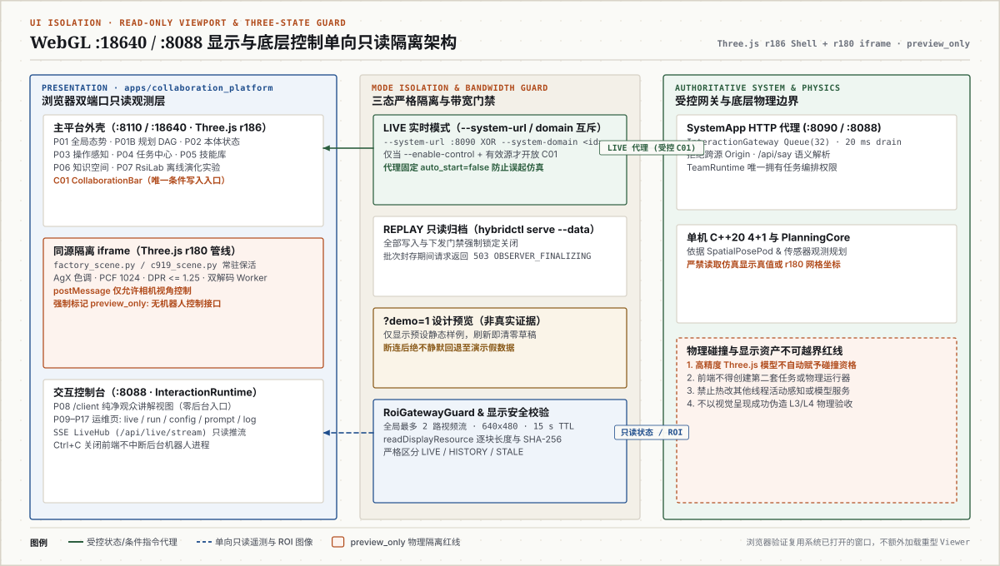

FACRI 多机协作平台前端以 React、Vite 与 Three.js
构建只读观测界面与受控交互代理，位于
apps/collaboration_platform/README.md
所述工作区。界面自身绝不创建第二套任务运行器或物理仿真器，所有下发指令均显式代理至主系统网关或受约束
ROS 服务。

工作台功能分区与主入口
平台页面分布于主平台端口（独立运行默认 8110 端口，或由统一入口 18640 端口统一暴露）以及交互控制台端口（8088 端口），按职责划分为四大工作区：
- 全局态势与任务调度（P01、P01B、P04 与 C01）：承载三维全景视口、在线机器人状态、工作流 DAG 依赖图、步骤审计时间线以及底部人机对话交互栏。
- 本体状态与感知能力（P02、P03、P05、P06）：呈现 URDF 关节与力矩诊断、实时与交互式感知比对、后端实时就绪技能目录以及空间拓扑知识检索。
- 多机协作与离线演化（P07）：集中显示多机资源占用态势与
RsiLab离线反思演化实验面板，供工程师审阅对照补丁并执行受控回滚。 - 观众讲解与交互控制台（P08–P17）：独立运行于 8088 端口，分别提供面向访客的纯净大屏观众页及覆盖语音流、进程管理、提示词与评测的运维视图。
三态严格隔离：LIVE、REPLAY 与设计预览
为杜绝前端将静态设计样例与真实物理运行数据混淆，平台在网关与渲染层强制执行三态隔离机制：
- 设计预览态（
?demo=1）：访问http://127.0.0.1:8110/?demo=1时允许展示预设设计情景样例，刷新即重置草稿；去掉该参数后若后端失连，页面严格显示缺失或待连接，绝不静默退回演示图。 - 实时观测与受控写入（LIVE）：仅当显式启用控制开关、存在有效实时观察源并锁定具体受控实体时，底部交互栏才允许代理下发指令，且后台代理固定关闭自动启动标志。
- 只读历史回放（REPLAY）：通过
hybridctl serve装载已归档运行目录与清单时，一切写操作门禁锁定关闭，仅保留时间轴与三维视图回放。
高精度三维隔离渲染与感知交互边界
高精度工厂与 C919 机坪全景分别运行在同源隔离 iframe
引擎内，完整保留经过验证的 Three.js r180
渲染管线并常驻保活，确保在全局态势、规划聚焦与任务中心间切换时不重复加载纹理或破坏
WebGL
上下文。跨框架消息通信严格校验来源并仅开放只读视角控制，无任何机器人控制写入接口；所有新引入的高精度外观资产强制标记为
preview_only，绝不自动付与物理碰撞或路径规划资格。
在操作感知与离线演化工作区中，前端严格按后端真实回执展示能力边界：感知面板同时比对实时观测与交互裁剪观测，清晰标注帧代际号与并发流限额（默认最多 2 路视频流），当视觉后端未激活时如实呈报「不可用」，严禁以仿真真值位姿替代算法输出。
展开全部 19 个页面路由表与渲染/网关技术细节
1. 页面拓扑全量清单（P01–P17 + P01B + C01）
| 页面编号 | Hash 或路径 | 所属端口 | 核心职责 |
|---|---|---|---|
| P01 全局态势 | /#global |
8110 / 18640 | 承载三维场景全景、在线机器人标牌与全局任务进度 |
| P01B 规划聚焦 | /?view=planning#global |
8110 / 18640 | 展示工作流 DAG 依赖边、节点归属与候选规划对比详情 |
| P02 本体状态 | /#body |
8110 / 18640 | URDF 运动学渲染、实时关节角/力矩曲线、IMU 与单机原始诊断数据 |
| P03 操作感知 | /#perception |
8110 / 18640 | 融合 RealPerception 与
InteractivePerception，比对观测源与帧代际号 |
| P04 任务中心 | /#missions |
8110 / 18640 | 任务列表、DAG 节点状态机、执行回执与步骤级审计事件时间线 |
| P05 技能库 | /#skills |
8110 / 18640 | 区分产品能力说明与后端实时就绪技能契约，支持参数检查与草稿编辑 |
| P06 知识与空间 | /#knowledge |
8110 / 18640 | 空间拓扑节点、语义标注图谱、静态知识包与多维记忆库检索 |
| P07 协作与改进 | /#collaboration |
8110 / 18640 | 多机资源占用态势与离线反思进化工作区 |
| C01 人机交互栏 | 全局页底部抽屉 | 8110 / 18640 | CollaborationBar
组件：文字对话、语音快捷下发、核查摘要与回执跟踪 |
| P08 观众页 | /client |
8088 | 纯净大屏讲解与对话态呈现，无后台管理或参数修改入口 |
| P09–P17 交互控制台 | /#overview 至 /#eval |
8088 | 覆盖实时流、进程管理、分组配置、提示词、工具声明、日志、导览与评测 |
2. 三态绑定、渲染参数与网关源码锚点
- 系统源互斥与只读锁定：
--system-url与--system-domain严格互斥；代理入口固定auto_start=false（见apps/collaboration_platform/src/embodied_hybrid/modules/presentation/operator_routes.py）；若观察器收尾封存期间收到新请求，服务返回503 OBSERVER_FINALIZING。 - 同源隔离场景与视觉令牌：外壳基于 Three.js
r186，高精度子场景分别由
apps/collaboration_platform/src/embodied_hybrid/modules/presentation/factory_scene.py与apps/collaboration_platform/src/embodied_hybrid/modules/presentation/c919_scene.py托管（Three.js r180，保留 16 位贴图重建、AgX 色调映射、1024 分辨率 PCF 阴影、DPR 上限 1.25、双解码线程与compileAsync管线），样式共享apps/ui_theme/tokens.css。 - 独立 GPU 启动器与限流参数：双显卡宿主可使用
apps/collaboration_platform/launch_factory_gpu.sh拉起专用独立 Chrome 配置以防后台计时器节流；视频流限流守护默认限制最多 2 路并发视觉流与最大 640×480 ROI 区域；离线进化代理路由位于apps/collaboration_platform/src/embodied_hybrid/modules/presentation/rsi_routes.py。